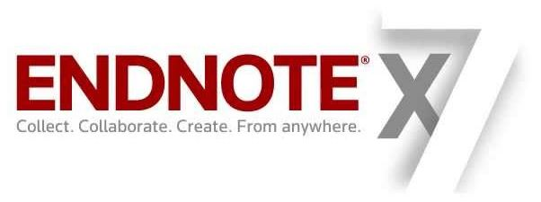

name: inverse layout: true class: center, middle, inverse --- # Gérer et formater sa bibliographie <hr /> Nicolas Casajus, Steve Vissault et Kévin Cazelles <br /> </img> <br /> .footnote[En ligne sur [<i class="fa fa-github"></i>](https://github.com/SteveViss/Talk_bib/)] .footnote[Fait avec <span class="glyphicon glyphicon-heart" aria-hidden="true" style="color:red;"></span> sur [Remark](http://remarkjs.com/#1)] ??? pas de note <!-- %%%%%%%%%%%%%%%%%%%%%%%%%%%%%%%%%%%%%%%%%%%%%%%%%%%%%%%%%%%%%%%%%%%%%%% --> --- name: inverse layout: true class: center, middle, inverse --- ## Introduction <hr /> ### Avant le gros code sale <!-- %%%%%%%%%%%%%%%%%%%%%%%%%%%%%%%%%%%%%%%%%%%%%%%%%%%%%%%%%%%%%%%%%%%%%%% --> --- layout: false ## Une référence bibliographique, c'est quoi? <hr /> <br /> -- 1. Un repère scientifique et chronologique > Qui a fait quoi quand? -- 2. Une source d'information > Résultats antérieurs, autres références -- 3. Un appui à un argument > Ça a été montré là -- 4. Un ensemble de données relatif à cette source d'information (metadonnées) > Auteurs, date, journal ??? mes notes <!-- %%%%%%%%%%%%%%%%%%%%%%%%%%%%%%%%%%%%%%%%%%%%%%%%%%%%%%%%%%%%%%%%%%%%%%% --> --- ## Qu'en fait-on? <hr /> <br /> -- 1. On les cherche > Bibliothèques, archives, Internet -- 2. On les stocke > Endnote, Mendeley, Zotero -- 3. On les cite > Microsoft Word, LibreOffice, LaTeX, Markdown -- 4. On fait des statistiques dessus (bibliométrie) > Research Gate, Google Scholar ??? les statistiques, c'est aussi par là que passe les impact factor, les H-index... <!-- %%%%%%%%%%%%%%%%%%%%%%%%%%%%%%%%%%%%%%%%%%%%%%%%%%%%%%%%%%%%%%%%%%%%%%% --> --- ## Qu'en fait-on? <hr /> <br />  <!-- %%%%%%%%%%%%%%%%%%%%%%%%%%%%%%%%%%%%%%%%%%%%%%%%%%%%%%%%%%%%%%%%%%%%%%% --> --- ## Chercher des références bibliographiques <hr /> <br /> - [Google Scolar](https://scholar.google.ca) > Alertes -- - [Web of Science](https://apps.webofknowledge.com/) > La base de donnée d'articles scientifiques -- - [Service bibliothèque](http://biblio.uqar.ca) > Profitez-en ! -- - [Les journaux](http://www.nature.com) > [Flux RSS](http://www.cnetfrance.fr/produits/l-apres-google-reader-10-alternatives-pour-gerer-ses-flux-rss-39774710.htm) -- - [Research Gate](https://www.researchgate.net/home) > Suivez les chercheurs de votre discipline -- - et bien d'autres moteurs de recherche spécialisés ??? Les journaux => flux RSS => les auteurs un mail direct <!-- %%%%%%%%%%%%%%%%%%%%%%%%%%%%%%%%%%%%%%%%%%%%%%%%%%%%%%%%%%%%%%%%%%%%%%% --> --- ## Les données relatives aux références (méta-données) <hr /> <br /> 1. Quoi? > Article, livre, chapitre, etc. -- 2. Qui? > Auteurs -- 3. Quand? > Date -- 4. Où? > Journal, éditions, collection, URL, etc. -- 6. **Une identification unique** > Au-delà du recoupement d'informations ??? Jusqu'à la personnelle communication Croiser tous ces facteurs pour avoir une source unique ou pas <!-- %%%%%%%%%%%%%%%%%%%%%%%%%%%%%%%%%%%%%%%%%%%%%%%%%%%%%%%%%%%%%%%%%%%%%%% --> --- ## Mécanismes d'identification des ressources <hr /> <br /> 1. **ISSN** (_International Standard Serial Number_) 2. **ISBN** (_International Standard Book Number_) 3. **DOI** (_Digital Object Identifier_) -- 4. **ArXiv ID** > Service de prépublication [en ligne](http://arxiv.org/pdf/1511.05154.pdf) -- 5. **PMID** (_PubMed IDentifier_) > Tout ce qui est [biomedical](http://www.ncbi.nlm.nih.gov/pubmed) -- <!-- %%%%%%%%%%%%%%%%%%%%%%%%%%%%%%%%%%%%%%%%%%%%%%%%%%%%%%%%%%%%%%%%%%%%%%% --> --- ## International Standard Serial Number (ISSN) <hr /> <br /> - Pour les publications en série > Journaux, revues, collections, etc. -- - Normalisé > Norme ISO depuis 1975 - 2 x 4 chiffres > Dernier chiffre = [clé de vérification](https://fr.wikipedia.org/wiki/International_Standard_Serial_Number) -- - Exemples : <br /> ``` Science: ISSN 0036-8075 (print), 1095-9203 (online) Ecology Letters: ISSN 1461-0248 (online) ``` <!-- --> <!-- %%%%%%%%%%%%%%%%%%%%%%%%%%%%%%%%%%%%%%%%%%%%%%%%%%%%%%%%%%%%%%%%%%%%%%% --> --- ## International Standard Book Number (ISBN) <hr /> <br /> - Normalisé > Norme ISO depuis 1972 - Composé de 13 chiffres (depuis 2007, 10 auparavant) -- <br /><br />  <!-- %%%%%%%%%%%%%%%%%%%%%%%%%%%%%%%%%%%%%%%%%%%%%%%%%%%%%%%%%%%%%%%%%%%%%%% --> --- ## International Standard Book Number (ISBN) <hr /> <br /> - Écrit avec le code barre -- <br /><br />  -- <br /><br /> - [ISBN Search](http://www.isbnsearch.org) > À quel livre correspond **978-0-961-392-10** ? ??? 978-1-234-56789-7 978-0-961-392-109 <!-- %%%%%%%%%%%%%%%%%%%%%%%%%%%%%%%%%%%%%%%%%%%%%%%%%%%%%%%%%%%%%%%%%%%%%%% --> --- ## Digital Object Identifier (DOI) <hr /> <br /> - Identifier des resources numériques > Articles scientifiques > Jeux de données ([DataCite](https://www.datacite.org/node)) > Code ([Zenodo](https://zenodo.org/about)) -- - Normalisé depuis 2012 -- - Un peu plus sur le sujet : > [Articles en ligne BBF (1998)](http://bbf.enssib.fr/consulter/bbf-1998-03-0049-007) > [Articles INIST](http://www.inist.fr/?Attribution-de-DOI) > [DOI ISBN](https://www.doi.org/factsheets/ISBN-A.html) <!-- - DOI ISSN (recommandé) --> <!-- %%%%%%%%%%%%%%%%%%%%%%%%%%%%%%%%%%%%%%%%%%%%%%%%%%%%%%%%%%%%%%%%%%%%%%% --> --- ## Digital Object Identifier (DOI) <hr /> <br /> - Accès rapide aux metadonnées -- - À partir d'un titre > Will a Large Complex System be Stable? > [crossref](http://crossref.org) -- - À partir d'un DOI >[doi.org](http://www.doi.org) > 10.1111/j.1461-0248.2011.01732.x > 10.3410/f.718255373.793490237 - Ne plus saisir les metadonnées à la main > Grâce aux outils adéquats ??? Ca veut dire que si je peux aller chercher DOI en ligne, je peux avoir accès à toutes aux metadonnées Kev : todo lire plus sur le pourquoi de l'existence du DOI et qui en est à l'origine --- ## Mécanismes d'identification des contributeurs <hr /> <br> ### Research Gate <br> -- ### *Open Researcher and Contributor ID* (ORCID) -- <br /> 1- Idenditfier les chercheurs par un numéro unique > 0000-0001-6619-9874 > [https://orcid.org/0000-0001-6619-9874](https://orcid.org/0000-0001-6619-9874) -- <br /> 2- S'indentifier rapidement quand on soumet un manuscript  -- <br /> 3- Faire le lien entre son identifiant et celui de ses publications -- --- ## Pourquoi utiliser ORCID ? <hr /> <br /> 1- Identifiant unique qui distingue des chercheurs qui ont le même nom 2- De plus en plus de plateformes (dont celles pour soumettre des manuscripts) utilisent ORCID 3- Vos données personnelles sont protégées (c'est moins le cas avec Research Gate) -- 4- Accès à une interface de programmation. Avec [ORCID Feed](http://feed.labs.orcid-eu.org) et un un terminal muni de [curl](https://curl.haxx.se), on peut importer ses publicatione en différents formats : ``` curl http://feed.labs.orcid-eu.org/0000-0001-6619-9874.bib > ./publi.bib curl http://feed.labs.orcid-eu.org/0000-0001-6619-9874.yml > ./publi.yml curl http://feed.labs.orcid-eu.org/0000-0001-6619-9874.json > ./publi.json ``` -- 5- Plus d'arguments [ici](http://orcid.org/content/requiring-orcid-publication-workflows-open-letter) --- name: inverse layout: true class: center, middle, inverse --- ## Stocker ses références <hr /> ### Quelques outils disponibles --- layout: false ## Trois alternatives principales <hr /> <!-- <span class="glyphicon glyphicon-ok" aria-hidden="true" style="color:green;"></span> --> <table class="table table-striped" style="font-size:15px;"> <thead> <tr> <th></th> <th></img></th> <th></img></th> <th><img src="./images/logo_zotero.png" style="height:40px;"></img></th> </tr> </thead> <tbody> <tr> <th>Création</th> <td>2001</td> <td>2007</td> <td>2005</td> </tr> <tr> <th>Propriétaire</th> <td>Thomson Reuters, <b>Payant</b></td> <td>Elsevier,<br> <b>Gratuit</b></td> <td>Libre, OpenSource et <b>Gratuit</b></td> </tr> <tr> <th>Stockage</th> <td>Payant</td> <td>Gratuit (2Gb)</td> <td>Gratuit (300 Mo)</td> </tr> <tr> <th>Multi-plateforme</th> <td><span class="glyphicon glyphicon-ok" aria-hidden="true" style="color:green;"></span></td> <td><span class="glyphicon glyphicon-ok" aria-hidden="true" style="color:green;"></span></td> <td><span class="glyphicon glyphicon-ok" aria-hidden="true" style="color:green;"></span></td> </tr> <tr> <th>Serveur distant</th> <td><span class="glyphicon glyphicon-remove" aria-hidden="true" style="color:red;"></span></td> <td><span class="glyphicon glyphicon-ok" aria-hidden="true" style="color:green;"></span></td> <td><span class="glyphicon glyphicon-ok" aria-hidden="true" style="color:green;"></span></td> </tr> <tr> <th>Visualisation et prise de note PDF</th> <td><span class="glyphicon glyphicon-remove" aria-hidden="true" style="color:red;"></span></td> <td><span class="glyphicon glyphicon-ok" aria-hidden="true" style="color:green;"></span></td> <td><span class="glyphicon glyphicon-remove" aria-hidden="true" style="color:red;"></span></td> </tr> <tr> <th>Recherche plein texte</th> <td><span class="glyphicon glyphicon-ok" aria-hidden="true" style="color:green;"></span></td> <td><span class="glyphicon glyphicon-ok" aria-hidden="true" style="color:green;"></span></td> <td><span class="glyphicon glyphicon-remove" aria-hidden="true" style="color:red;"></span></td> </tr> <tr> <th>Interopérabilité</th> <td> Microsoft Word<br> Open Office<br> Libre Office </td> <td> Microsoft Word<br> Open Office<br> Libre Office<br> LateX </td> <td> Microsoft Word<br> Open Office<br> Libre Office<br> LateX </td> </tr> </tbody> </table> .footnote[[Pour en savoir davantage](https://github.com/SteveViss/Talk_bib/raw/master/Ressources/Logiciels%20Biblio_Comparatif.pdf)] --- name: inverse layout: true class: center, middle, inverse --- ## Stocker ses références <hr /> ### Illustration avec Zotero et Mendeley ??? 1. Mendeley - Importer un PDF qui fonctionne avec/sans metadonnées - Corriger les métadonnées - Créer une librairie de PDF - Connexion au cloud - Création de groupes de travail 1. Zotero - Importation de fichiers/articles à partir du Web - Lier le fichiers PDF aux metadonnées - Connexion au cloud --- layout: false ## Exemple en live <hr /> <br /> --- name: inverse layout: true class: center, middle, inverse --- ## Générer une bibliographie <hr /> ### LibreOffice et le plugin Mendeley --- layout: false ## Exemple en live <hr /> <br /> --- name: inverse layout: true class: center, middle, inverse --- ## Générer une bibliographie <hr /> ### LaTeX, Markdown et Pandoc --- layout: false ## LaTeX, Markdown et Pandoc: quésako? <hr /> <br />  -- <br /><br /> - Format de fichier (et logiciel) - Contient la description d'une référence sous forme de mot-clé -- <br /><br /> ``` @article{arrow1961, author={Arrow, Kenneth J. and Leonid Hurwicz and Hirofumi Uzawa}, title={Constraint qualifications in maximization problems}, journal={Naval Research Logistics Quarterly}, volume={8}, year=1961, pages={175-191} } ``` <br /> -- - Utilisé par LaTeX, Markdown et Pandoc - Export automatique depuis Mendeley --- layout: false ## LaTeX, Markdown et Pandoc: quésako? <hr /> <br />  -- <br /><br /> - Langage de description de document - Appartient à la famille des langages à balises <br /><br /> ``` \textit{Ce texte sera écrit en italique} ``` <br /> -- - L'utilisateur ne s'intéresse qu'au contenu du document - Le typographe virtuel s'occupe de la mise en page - Le document compilé produit un PDF ou un PostScript -- - Pour insérer une citation, on écrira : <br /><br /> ``` \cite{Gravel2014} \citep{Gravel2014} ``` <br /> --- layout: false ## LaTeX, Markdown et Pandoc: quésako? <hr /> <br />  -- <br /><br /> - Langage à balises **léger** <br /><br /> ``` _Ce texte sera écrit en italique_ ``` <br /> -- - Version allégée de LaTeX - Le principe est le même que pour LaTeX -- - Pour insérer une citation, on écrira : <br /><br /> ``` @Gravel2014 [@Gravel2014] ``` <br /> --- layout: false ## LaTeX, Markdown et Pandoc: quésako? <hr /> <br /> ### Pandoc -- <br /> - Convertisseur de formats de documents - Plusieurs dizaines de formats pris en compte - Markdown, LaTeX, HTML, Word, Writer, ePUB, PDF, JSON, XML, etc. -- - Programme en lignes de commande <br /><br /> ``` ###Création d'un PDF à partir d'un fichier LaTeX panoc -o output.pdf input.tex ###Création d'un PDF à partir d'un fichier Markdown panoc -o output.pdf input.md ###Création d'un DOCX à partir d'un fichier LaTeX panoc -o output.docx input.tex ``` --- layout: false ## Les fichiers de style bibliographique <hr /> <br /> ### Fichier CSL <br /> - Contient le formatage des différents items d'une référence bibliographique - Souvent associé à une revue - Informations reconnues par Zotero, Mendeley et Pandoc - Plusieurs centaines de style disponible sur [<i class="fa fa-github"></i>](https://github.com/citation-style-language/styles) -- <br /> ### Alternatives <br /> - Fichier .ens (EndNote) - Fichier .bst (LaTeX) --- layout: false ## Exemple en live <hr /> <br /> --- name: inverse layout: true class: center, middle, inverse --- ## Extras <hr /> ### Gérer ses références avec R --- layout: false ## Les packages pour travailler avec des références bibliographiques <hr /> <br />  <br /> - R sert à faire des statistiques et des graphiques... et bien d'autres choses <br /> - Plusieurs packages permettent de manipuler de la bibliographie dont 1- **rcrossref** [CRAN](https://cran.r-project.org/web/packages/rcrossref/rcrossref.pdf) [<i class="fa fa-github"></i>](https://github.com/ropensci/rcrossref) 2- **rorcid** [CRAN](https://cran.r-project.org/web/packages/rorcid/rorcid.pdf) [<i class="fa fa-github"></i>](https://github.com/ropensci/rorcid) 3- **RefManageR** [CRAN](https://cran.r-project.org/web/packages/RefManageR/index.html) --- layout: false ## rcrossref <hr /> <br /> - Connexion à l'API de CrossRef - Deux fonctions à retenir: <br /> ``` ### Recherche d'articles par mot-clé > cr_search(query, rows, ...) ### Extraction des citations en BibTeX > cr_cn(dois, format = 'bibtex') ``` --- layout: false ## rorcid <hr /> <br /> - Connexion à l'API de ORCID - Deux fonction à retenir : ``` ### Aller chercher les données relatives à un identifiant > as.orcid(x) ### où x est l'identifiant > summary(as.orcid(x)) ### Extraction des publication > works(as.orcid(x)) ``` --- layout: false ## Application <hr /> <br /> Quelques lignes de code qui permettent de manipuler des données ORCID avec R. <br /> - Se rendre à l'exemple : [<i class="fa fa-github"></i>](https://gist.github.com/KevCaz/599c5a16cf26f65dcd21) - Télécharger l'exemple : [<i class="fa fa-download"></i>](https://gist.github.com/KevCaz/599c5a16cf26f65dcd21/archive/32958932a02884cc4f524efbfd06a7c91c31b171.zip) <!-- --- layout: false ## Exemple en live <hr /> <br /> - Création d'un PDF avec les références (sans citation) dans le terminal <br /> $ pandoc -o exemple2.pdf exemple2.tex \ --bibliography=ref-cazelles.bib \ --csl=nature.csl $ open exemple2.pdf <br /> --> --- name: inverse layout: true class: center, middle, inverse --- ## Fin <hr /> ### Place à la discussion